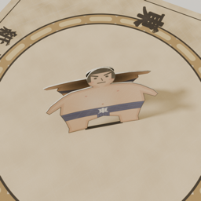

プライバシーポリシー紙相撲 / Paper Sumo
最終更新: 2026-10-20
紙相撲（以下「本アプリ」）は、個人情報を収集しません。
- 本アプリが保存するのは、力士のデザイン、対戦成績、音楽の設定のみで、すべてお使いの端末内に保存されます。開発者のサーバーに送信されることはありません。
- 本アプリには広告、解析ツール、トラッキングは含まれていません。
- 「ネット対戦」では、同じネットワーク上の端末同士が直接通信するか（MultipeerConnectivity）、Apple の Game Center を通じて接続します。Game Center の利用には Apple のプライバシーポリシーが適用されます。対戦中にやり取りされるのは、力士のデザイン、叩いた回数、力士の位置といったゲームの状態だけで、本アプリはこれを保存しません。
- 本ポリシーを変更する場合は、このページで告知します。
- お問い合わせ: GitHub の Issues
Privacy Policy (English)
Last updated: 2026-10-20
Paper Sumo ("the app") does not collect personal data.
- The app stores only your wrestler designs, match results and music settings, and keeps them on your device. Nothing is sent to the developer's servers.
- The app contains no ads, analytics or tracking.
- In online play, devices connect directly over the local network (MultipeerConnectivity) or through Apple's Game Center, which is covered by Apple's privacy policy. Only game state is exchanged (wrestler designs, tap counts, figure positions), and the app does not keep it.
- Changes to this policy will be posted on this page.
- Contact: GitHub Issues